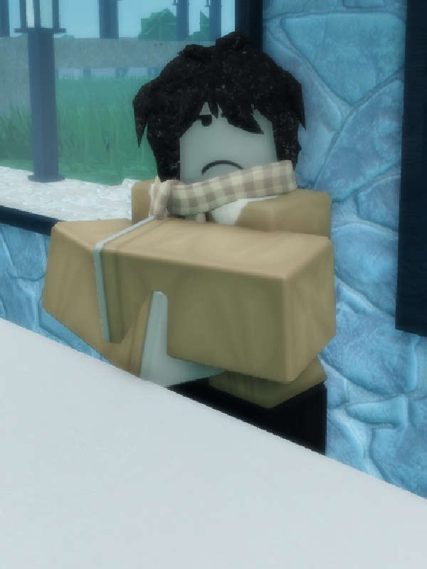

Marianna

Marianna is one of the most notable characters in Spanish Village 2. She has a beige jacket and scarf, black hair, black trousers and gray skin.
Trivia
• Marianna was based off of Victor Tsoi's wife Marianna Tsoi.
• She likes flags and listens to Victor Tsoi.
• She works in a flag store, which is also presumably owned by her.
• She likes flags and listens to Victor Tsoi.
• She works in a flag store, which is also presumably owned by her.